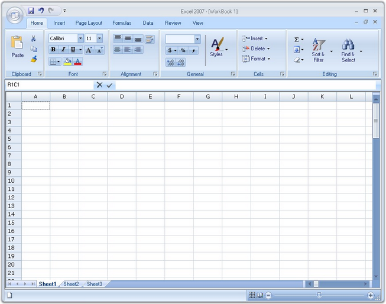

Essential Grid control provides support to implement the Microsoft Excel 2007-like User Interface (UI). It contains a Name Box that shows the current selection range, and a Formula Bar which supports the formula cells. The row and column headers of the selected range are highlighted on the UI. This feature is similar to Excel.

Figure 191: Microsoft Excel 2007-like UI implemented by using Grid
A sample demonstrating this feature is available under the following sample installation path.
<Install Location>\Syncfusion\EssentialStudio\[Version Number]\Windows\Grid.Windows\Samples\2.0\Product Showcase\Excel Like UI Demo